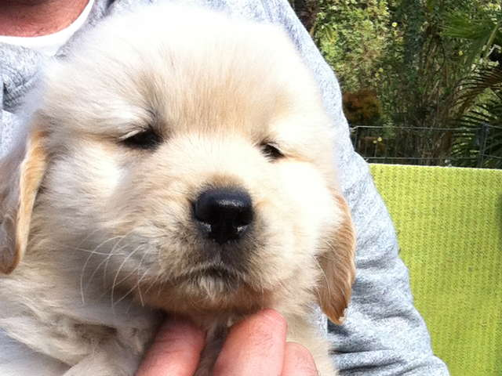
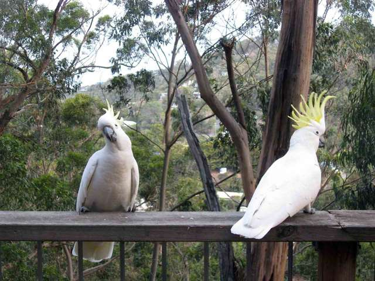
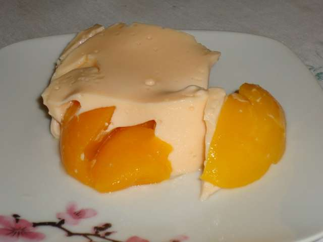

In the first project in the udacity nanodegree front end I practiced html and css by converting a mockup from a blog article into a real site..
Trading card Page

Puppy of Golden Retriever dog's.
In the second project in the udacity front end nanodegree I recreated a web page from a prototype design.
Udacity responsive images

Responsive images Udacity.
In this Udacity quiz I worked with the Grunt tool to automate some processes and found it quite interesting. I also trained a lot with responsive images.
Recipe Page
Div soup clean up.
In this challenge I had to use semantic HTML in place of the various divs.
Recipe Page

Homemade Peach Ice Cream.
In this work I trained HTML and CSS. It was a job at the beginning of the course and it was quite simple.